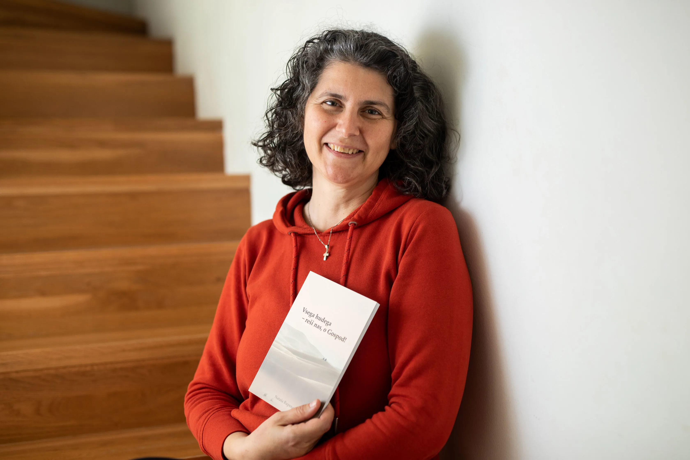
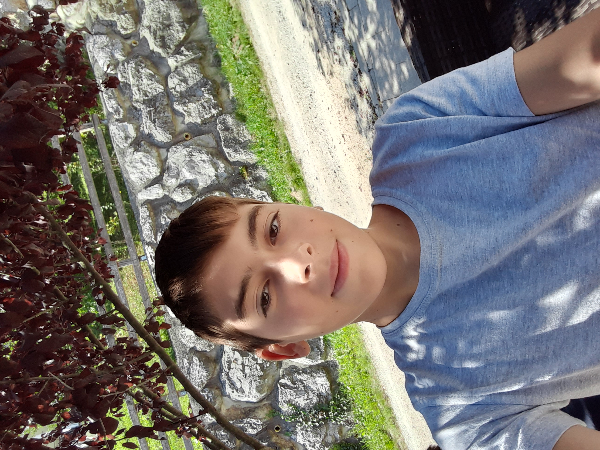
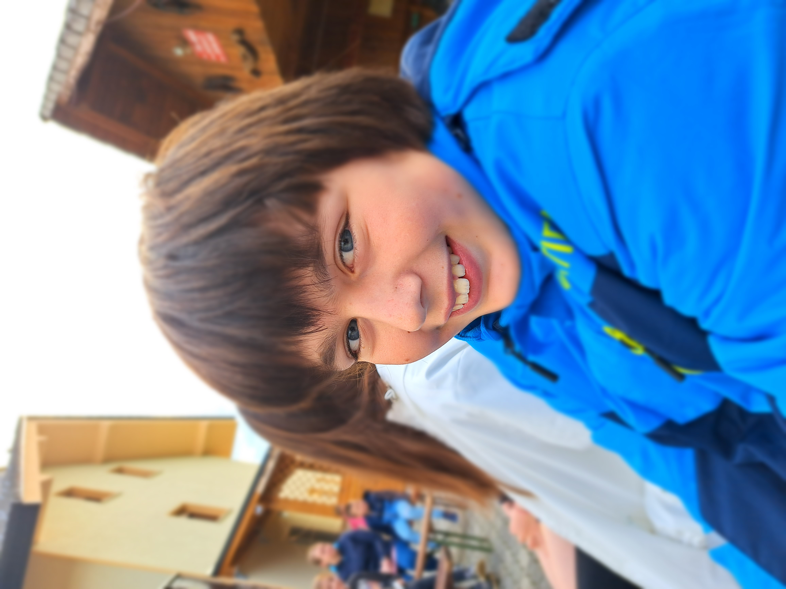

Smo pet članska družina in spodaj si lahko preberete o vsakem izmed nas.
Ervin
Sem Ervin Rupena, rojen v Kopru, 13.11.1973. Živel sem v Strunjanu, hodil
v osnovno šolo v Lucijo in odšel v Ljubljano
kjer sem obiskoval srednjo gradbeno šolo.
Po šoli sem šel v vojsko in začel delat v gradbeništvu.
Leta 2000 sem se preselil prvo v Ljubljano in kasneje v Prevoje.
Leta 2005 sem se poročil z mojo najboljšo prijateljico,
Natašo s katero sva si zgradila hišo v Moravčah.
Leta 2008 se nam je rodila Marija Klara,
leta 2010 pa dvojčka Klemen in Kristjan.
Rad igram nogomet, šah in delam na vrtu.
Rad imam življenje in sem Bogu hvaležen za vse kar imam.
obiščite moj Facebook profil
Nataša

Jaz pa sem Nataša, mami družine. Sem srečnica, ker imam čudovitega moža in krasne otroke.
Zadnja tri leta res uživam: pišem, rišem, počivam, snujem družinsko življenje in še in še.
Hvaležna sem za vse, kar imamo. Manjka mi edino še avtodom - za dva!
Ime mi je Marija Klara. Stara sem 15 let in na žalost hodim na Gimanzijo Želimlje.
Imam dva manjša brata dvojčka, ki sta zelo ubogljiva. V prostem času rada igram odbojko ali drsam.
Lahko pogledate:
Klemen Marija

Jaz sem Klemen star sem 14 let rodil sem se 2.1.2010. Imam brata dvojčka Kristjana.
Rad peljem drona, igram
Valorant in delam stvari na računalniku.
Hodim v 8. razred osnovne šole.
Hočem iti naprej na računalniško srednjo šolo.
Všeč so mi polarne lisice. V šoli sem odličen.
Če vas zanima več o mojem dronu si lahko preberete tukaj.
Kristjan Marija

Sem Kristjan imam 14 let. Rodil sem v Ljubljani 2.1.2010 imam brata dvojčka, ki je starejši za 7 minut.
Hodim v osnovno šolo Moravče.
Zelo rad imam športe, ki se odvijajo zunaj kot na primer
nogomet, rokomet ter zelo sem rad na morju.
Zelo rad pa tudi lovim ribe na morju in sladkih vodah.
Ko pa je slabo vreme pa rad igram računalniške igrce.
Poglejte tudi:
Če želite lahko rešite tudi kratek kviz o naši družini.